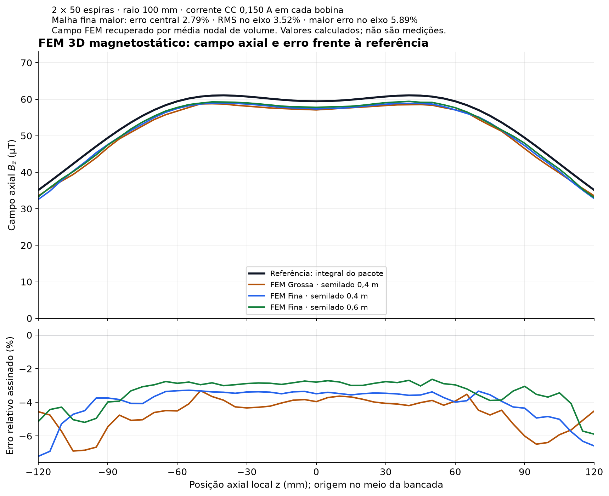

Da fonte ao enrolamento
Gerador de dois canais, amplificadores OPA548EVM, alimentação bipolar, retorno de energia, shunts, sensores e faixa de operação calculada.
Eletrônica com componentes e ligações, elementos finitos 3D executados, aquisição de instrumentos e análise quantitativa para a construção da bancada eletromagnética.
Gerador de dois canais, amplificadores OPA548EVM, alimentação bipolar, retorno de energia, shunts, sensores e faixa de operação calculada.
Malha tetraédrica, matriz de rigidez e solução esparsa para as duas bobinas CC. Resultados comparados a uma referência independente.
Captura passiva PicoScope, potência assinada e comparação com o modelo. Os templates ficam vazios até a medição real.
196.661 tetraedros · 33.000 nós · 0,150 A em cada bobina. Campo central FEM: 57,7779 µT; referência: 59,4386 µT; diferença: 2,79% nesse ponto.

| Ensaio | Configuração | Resultado disponível |
|---|---|---|
| CA principal | Duas fontes sincronizadas, RLC e receptor. Inicial: 2 V RMS, 1.400 Hz, fase 0°. | Simulação interativa V2 |
| CC / mapa FEM | Duas bobinas com 0,150 A CC medidos; capacitores contornados; receptor aberto. | Campo numérico FEM |
| PI CC | Uma bobina, Pico + MCP4725, ADC do shunt; segunda fonte e receptor desconectados. | Firmware proposto, não ensaiado |
| Toroide auxiliar | Fonte e limitação próprias; excitação separada das bobinas principais. | Dimensionamento convencional; sem ensaio físico |
| Item | Estado |
|---|---|
| Dimensionamento, FEM e algoritmos | Executados e verificados digitalmente |
| Eletrônica, sensores, filtro e firmware | Especificados; hardware não testado |
| CSV e calibração de campanha | Vazios / pendentes |
| Fabricação, montagem e medições | Não realizadas |
| Funções quânticas e gravitacionais da imagem | Sem demonstração neste projeto |
Ver relatório de software · Ver execuções no GitHub · Código e documentação V3